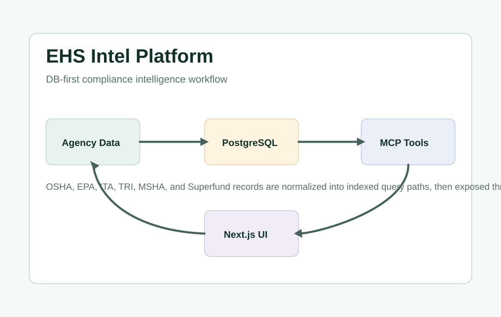
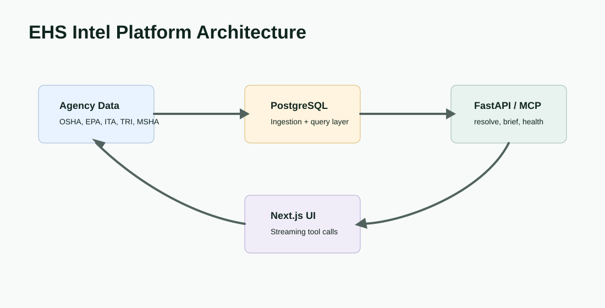
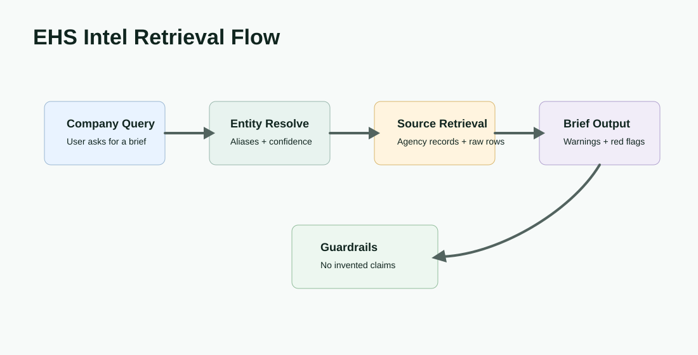

Product Surface


Problem
EHS research often requires stitching together OSHA, EPA, ITA, TRI, MSHA, Superfund, and other public records before a company or facility risk picture becomes usable. A plain chatbot is not enough because compliance answers need source-backed retrieval and careful claim boundaries.
Solution
The documented architecture is a PostgreSQL-centered intelligence platform with ingestion and sync scripts, normalized entity records, indexed query paths, source-fidelity fields, an MCP/FastAPI tool server, and a Next.js interface that streams model responses backed by resolve and brief endpoints.
Retrieval Flow

Design Decisions
DB-First Answers
Compliance-facing responses are grounded in indexed database retrieval before any synthesis layer is allowed to summarize.
Inspectable Resolution
Entity matching is separated from brief generation so company resolution can be reviewed before conclusions are drawn.
Source Fidelity
Raw-row style fields and provenance details preserve the path back to source agency records.
Guarded Synthesis
Prompt constraints are designed to avoid invented violations, unsupported red flags, or regulatory claims beyond retrieved records.
Operations And Reliability
The documented local workflow starts PostgreSQL in Docker, runs ingestion and migration paths, launches the MCP/FastAPI HTTP server, and serves a Next.js/React/TypeScript frontend. The web route coordinates streaming tool calls against retrieval endpoints rather than relying on free-form model context alone.